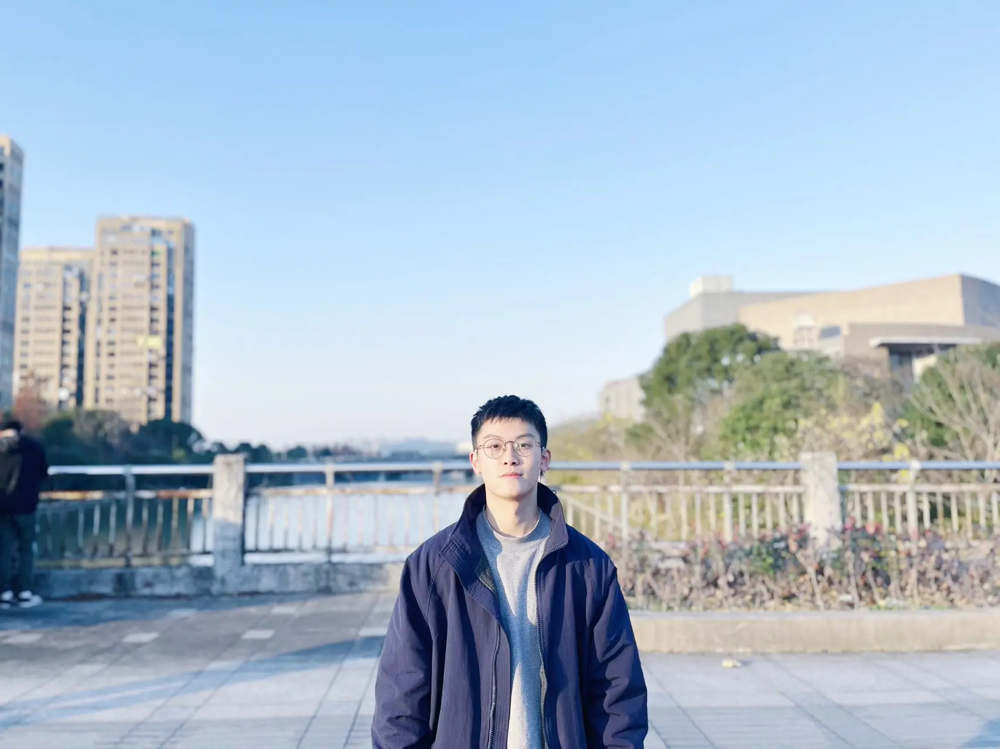
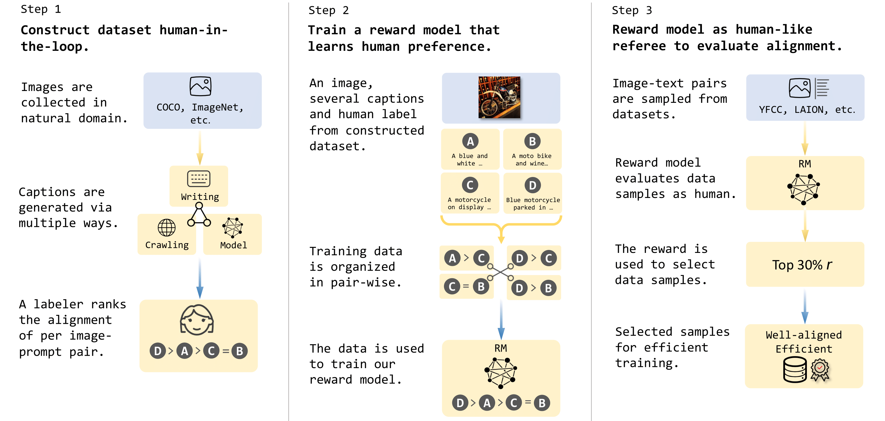
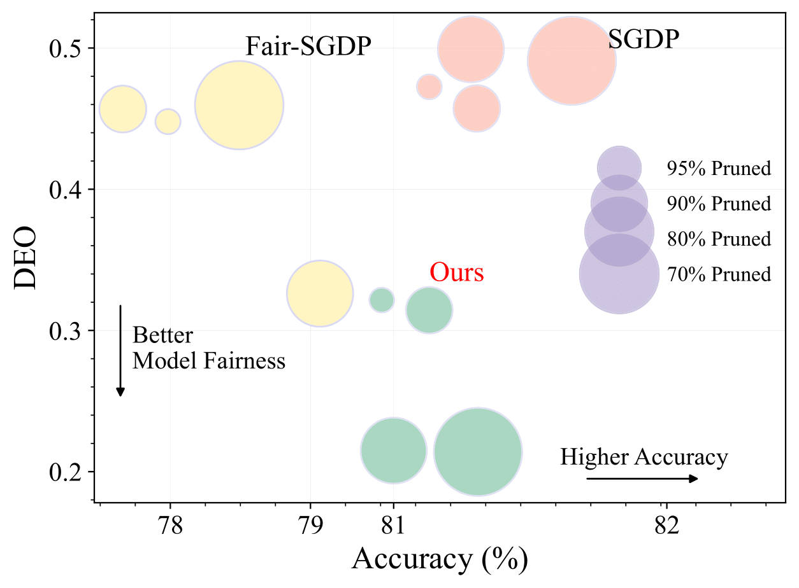
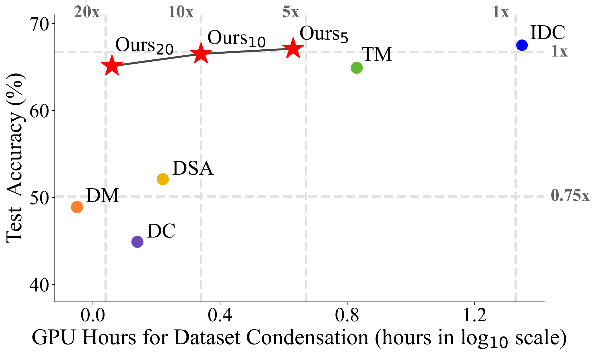
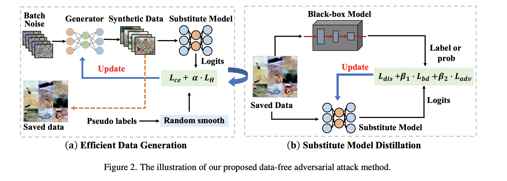
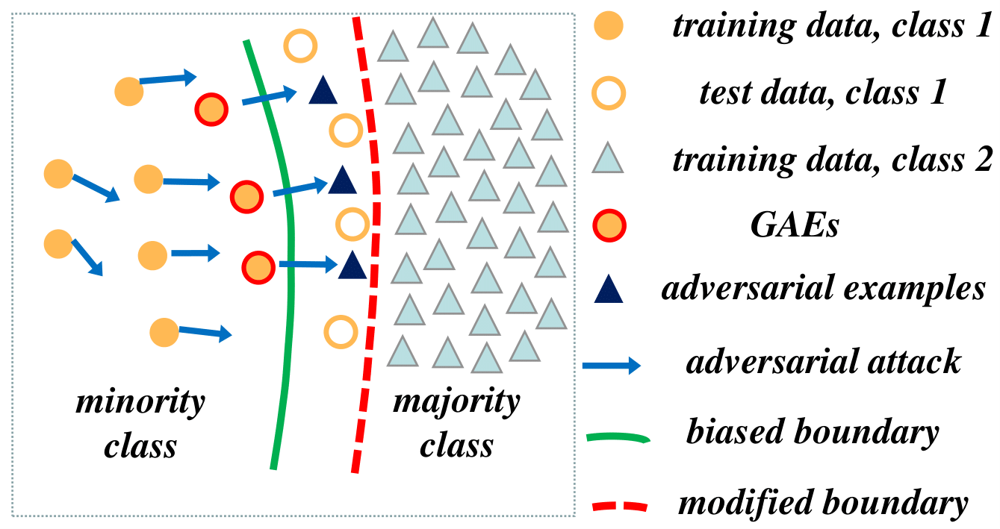

|
Lei Zhang I am a master student(Sep.2021 -) student in the Software Engineering department at Zhejiang University, focusing on multimodal large language models, AI alignment, and data-centric machine learning. Currently, I'm a visiting researcher in University of California, Santa Cruz with Prof. Cihang Xie. Before that, I spent great time at Alibaba Group as a research intern. I'm so lucky to work with Prof. Yuyin Zhou at UCSC, and Dr. Zhifei Zhang from Adobe Research. My research interest lies in machine learning and its applications, especially: • Multimodal large language models (MLLMs) • AI alignment • Data-centric Machine Learning stonermaxzl [at] gmail.com / Google Scholar / Github / Twitter |
 |
{kind=link}
News[07/2023] One first-authored paper is accepted by ICCV 2023. [03/2023] One first-authored paper is accepted by CVPR 2023 (Highlight; 2.5% acceptance rate). |
PublicationsPapers are sorted by recency, * denotes equal contribution. |
|  |
Compress & Align: Curating Image-Text Data with Human Knowledge
Lei Zhang, Fangxun Shu, Sucheng Ren, Bingchen Zhao, Hao Jiang, Cihang Xie Preprint, 2023 ArXiv / BibTeX The first one introduces a human-knowledge-based algorithm to address the alignment and efficiency of large-scale image-text data. It can secure model performance by compressing the image-text datasets up tp ~90%. |

|
Audio-Visual LLM for Video Understanding
Fangxun Shu*, Lei Zhang*, Hao Jiang, Cihang Xie Preprint, 2023 ArXiv / BibTeX Develop Aduio-Visual LLM, which take both visual and audio inputs for holistic video understanding and reasoning. Two key designs: modality-augmented training and GPT-4 assisted instruction generation. It attains super strong performance in understanding and reasoning tasks. |
|  |
Towards Fairness-aware Adversarial Network Pruning
Lei Zhang, Zhibo Wang, Xiaowei Dong, Yunhe Feng, Xiaoyi Pang, Zhifei Zhang, Kui Ren ICCV, 2023 ArXiv / BibTeX Propose a adversarial fairness-aware network pruning method, which optimizes both pruning and debias tasks jointly by adversarial training. It significantly improves fairness by around 50% as compared to traditional pruning methods. |
|  |
Accelerate Dataset Distillation via Model Augmentation
Lei Zhang, Jie Zhang, Bowen Lei, Subhabrata Mukherjee, Xiang Pan, Bo Zhao, Caiwen Ding, Yao Li, Dongkuan Xu CVPR, 2023 (Highlight) ArXiv / Supplementary Material / Code / BibTeX Propose two model augmentation techniques, i.e., using early-stage models and weight perturbation to learn an informative synthetic set with significantly reduced training cost. Extensive experiments demonstrate that our method achieves up to 20× speedup and comparable performance on par with state-of-the-art baseline methods. |
|  |
Towards Efficient Data Free Black-Box Adversarial Attack
Jie Zhang, Bo Li, Jianghe Xu, Shuang Wu, Shouhong Ding, Lei Zhang, Chao Wu, CVPR, 2022 ArXiv / Code / BibTeX By rethinking the collaborative relationship between the generator and the substitute model, we design a novel black-box attack framework. The proposed method can efficiently imitate the target model through a small number of queries and achieve high attack success rate. |
|  |
Adversarial Examples for Good: Adversarial Examples Guided Imbalanced Learning
Jie Zhang*, Lei Zhang*, Gang Li, Chao Wu ICIP, 2022 ArXiv / BibTeX Provide a new perspective on how to deal with imbalanced data: adjust the biased decision boundary by training with Guiding Adversarial Examples (GAEs). |
Experiences |
|
University of California, Santa Cruz
Visiting Student, Mar 2023 - Present Supervised by Prof. Cihang Xie, work on multimodal alignment and large-scale training of vision-language models. | |
|
Alibaba Group
Research Intern, May 2023 - Dec 2023 Work on Multimodal large language models (MLLMs). | |
| |
Microsoft Research Asia Researcher Intern, Dec 2022 - Feb 2023 Supervised by Dr. Xun Guo work on text-to-3d diffusion model. |
Professional ServicesConference Reviewer: CVPR 2024, NIPS 2024, CVPR 2023 Journal Reviewer: IEEE TPAMI |
|
No web trackers, feel free to see this website Last Update: 01/2024 Template |